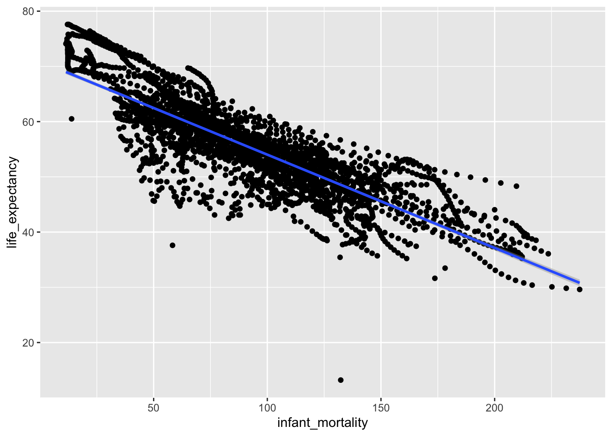
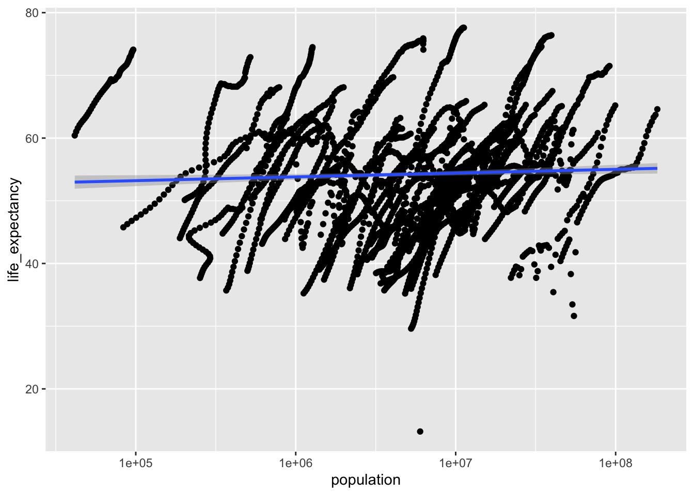
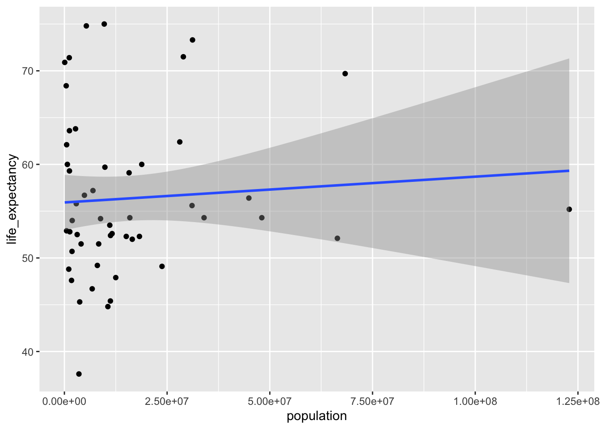
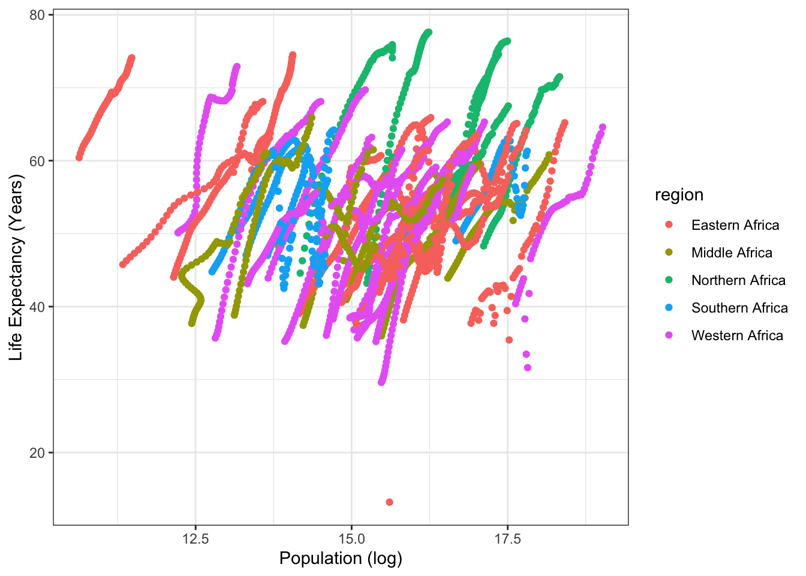
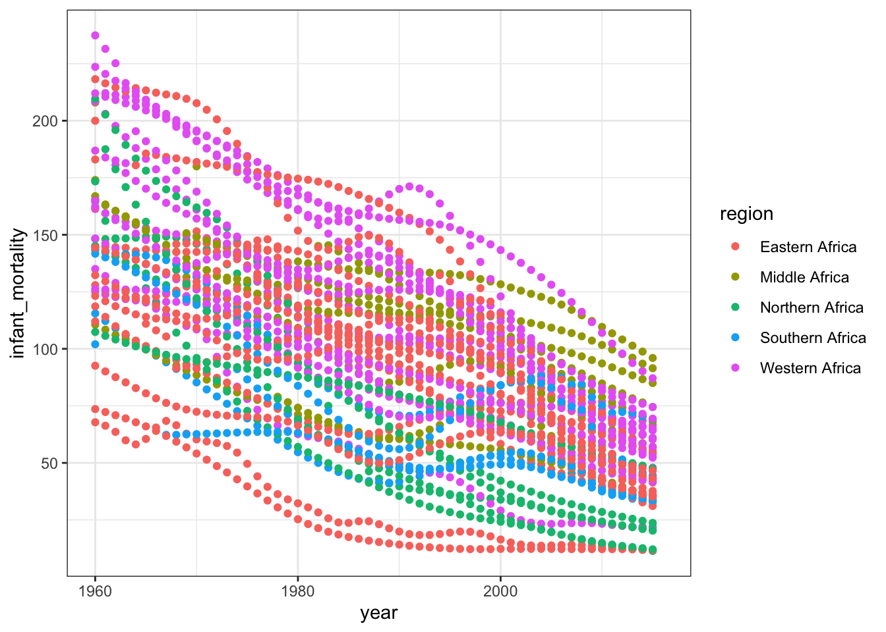
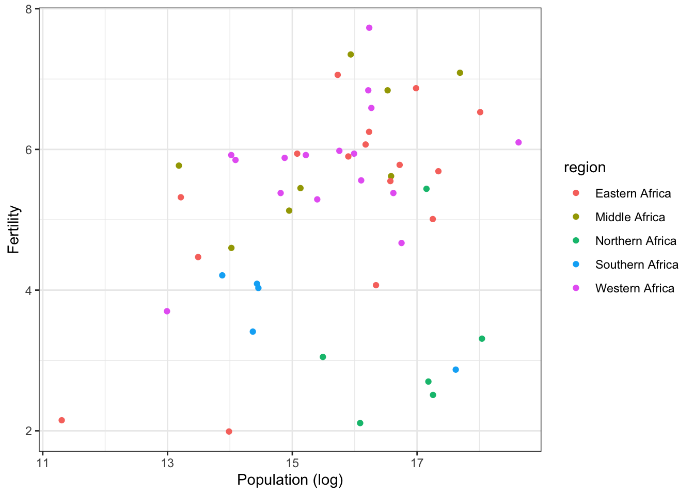

library(dslabs)
library(here)here() starts at /Users/jacobmatta/Documents/R/jacobmatta-MADA-portfoliolibrary(ggplot2)library(dslabs)
library(here)here() starts at /Users/jacobmatta/Documents/R/jacobmatta-MADA-portfoliolibrary(ggplot2)library(tidyverse)── Attaching packages ─────────────────────────────────────── tidyverse 1.3.2 ──
✔ tibble 3.1.8 ✔ dplyr 1.1.0
✔ tidyr 1.2.1 ✔ stringr 1.5.0
✔ readr 2.1.3 ✔ forcats 0.5.2
✔ purrr 0.3.5
── Conflicts ────────────────────────────────────────── tidyverse_conflicts() ──
✖ dplyr::filter() masks stats::filter()
✖ dplyr::lag() masks stats::lag()help(gapminder)str(gapminder)'data.frame': 10545 obs. of 9 variables:
$ country : Factor w/ 185 levels "Albania","Algeria",..: 1 2 3 4 5 6 7 8 9 10 ...
$ year : int 1960 1960 1960 1960 1960 1960 1960 1960 1960 1960 ...
$ infant_mortality: num 115.4 148.2 208 NA 59.9 ...
$ life_expectancy : num 62.9 47.5 36 63 65.4 ...
$ fertility : num 6.19 7.65 7.32 4.43 3.11 4.55 4.82 3.45 2.7 5.57 ...
$ population : num 1636054 11124892 5270844 54681 20619075 ...
$ gdp : num NA 1.38e+10 NA NA 1.08e+11 ...
$ continent : Factor w/ 5 levels "Africa","Americas",..: 4 1 1 2 2 3 2 5 4 3 ...
$ region : Factor w/ 22 levels "Australia and New Zealand",..: 19 11 10 2 15 21 2 1 22 21 ...summary(gapminder) country year infant_mortality life_expectancy
Albania : 57 Min. :1960 Min. : 1.50 Min. :13.20
Algeria : 57 1st Qu.:1974 1st Qu.: 16.00 1st Qu.:57.50
Angola : 57 Median :1988 Median : 41.50 Median :67.54
Antigua and Barbuda: 57 Mean :1988 Mean : 55.31 Mean :64.81
Argentina : 57 3rd Qu.:2002 3rd Qu.: 85.10 3rd Qu.:73.00
Armenia : 57 Max. :2016 Max. :276.90 Max. :83.90
(Other) :10203 NA's :1453
fertility population gdp continent
Min. :0.840 Min. :3.124e+04 Min. :4.040e+07 Africa :2907
1st Qu.:2.200 1st Qu.:1.333e+06 1st Qu.:1.846e+09 Americas:2052
Median :3.750 Median :5.009e+06 Median :7.794e+09 Asia :2679
Mean :4.084 Mean :2.701e+07 Mean :1.480e+11 Europe :2223
3rd Qu.:6.000 3rd Qu.:1.523e+07 3rd Qu.:5.540e+10 Oceania : 684
Max. :9.220 Max. :1.376e+09 Max. :1.174e+13
NA's :187 NA's :185 NA's :2972
region
Western Asia :1026
Eastern Africa : 912
Western Africa : 912
Caribbean : 741
South America : 684
Southern Europe: 684
(Other) :5586 class(gapminder)[1] "data.frame"gapminder <- gapminderafricadata <- dplyr::filter(gapminder, continent %in% c("Africa"))summary(africadata) country year infant_mortality life_expectancy
Algeria : 57 Min. :1960 Min. : 11.40 Min. :13.20
Angola : 57 1st Qu.:1974 1st Qu.: 62.20 1st Qu.:48.23
Benin : 57 Median :1988 Median : 93.40 Median :53.98
Botswana : 57 Mean :1988 Mean : 95.12 Mean :54.38
Burkina Faso: 57 3rd Qu.:2002 3rd Qu.:124.70 3rd Qu.:60.10
Burundi : 57 Max. :2016 Max. :237.40 Max. :77.60
(Other) :2565 NA's :226
fertility population gdp continent
Min. :1.500 Min. : 41538 Min. :4.659e+07 Africa :2907
1st Qu.:5.160 1st Qu.: 1605232 1st Qu.:8.373e+08 Americas: 0
Median :6.160 Median : 5570982 Median :2.448e+09 Asia : 0
Mean :5.851 Mean : 12235961 Mean :9.346e+09 Europe : 0
3rd Qu.:6.860 3rd Qu.: 13888152 3rd Qu.:6.552e+09 Oceania : 0
Max. :8.450 Max. :182201962 Max. :1.935e+11
NA's :51 NA's :51 NA's :637
region
Eastern Africa :912
Western Africa :912
Middle Africa :456
Northern Africa :342
Southern Africa :285
Australia and New Zealand: 0
(Other) : 0 Note: To do that I will remove every column or variable that is not infant mortality or life expectancy
Note: The -c in the code blow, indicates columns being dropped
Note: Brackets [] are used to indicate the position of items in the dataframe
Note: Left of the comma indicates the rows and right of the comma indicated columns
infant_mortality_and_life_expectancy <- africadata[,-c(1:2,5:9)]summary(infant_mortality_and_life_expectancy) infant_mortality life_expectancy
Min. : 11.40 Min. :13.20
1st Qu.: 62.20 1st Qu.:48.23
Median : 93.40 Median :53.98
Mean : 95.12 Mean :54.38
3rd Qu.:124.70 3rd Qu.:60.10
Max. :237.40 Max. :77.60
NA's :226 str(infant_mortality_and_life_expectancy)'data.frame': 2907 obs. of 2 variables:
$ infant_mortality: num 148 208 187 116 161 ...
$ life_expectancy : num 47.5 36 38.3 50.3 35.2 ...population_and_life_expectancy <- africadata[,-c(1:3,5,7:9)]summary(population_and_life_expectancy) life_expectancy population
Min. :13.20 Min. : 41538
1st Qu.:48.23 1st Qu.: 1605232
Median :53.98 Median : 5570982
Mean :54.38 Mean : 12235961
3rd Qu.:60.10 3rd Qu.: 13888152
Max. :77.60 Max. :182201962
NA's :51 str(population_and_life_expectancy)'data.frame': 2907 obs. of 2 variables:
$ life_expectancy: num 47.5 36 38.3 50.3 35.2 ...
$ population : num 11124892 5270844 2431620 524029 4829291 ...life_infant_plot <- infant_mortality_and_life_expectancy %>%
ggplot(aes(x=infant_mortality, y=life_expectancy)) + geom_point() +
geom_smooth(method='lm')
plot(life_infant_plot) `geom_smooth()` using formula = 'y ~ x'Warning: Removed 226 rows containing non-finite values (`stat_smooth()`).Warning: Removed 226 rows containing missing values (`geom_point()`).
figure_file = here("Coding_exercise", "coding_excercise_figures","life_infant_plot.png")
ggsave(filename = figure_file, plot=life_infant_plot)Saving 7 x 5 in image
`geom_smooth()` using formula = 'y ~ x'Warning: Removed 226 rows containing non-finite values (`stat_smooth()`).
Removed 226 rows containing missing values (`geom_point()`).life_population_plot <- population_and_life_expectancy %>%
ggplot(aes(x=population, y=life_expectancy)) + geom_point() +
geom_smooth(method='lm')
plot(life_infant_plot)`geom_smooth()` using formula = 'y ~ x'Warning: Removed 226 rows containing non-finite values (`stat_smooth()`).Warning: Removed 226 rows containing missing values (`geom_point()`).
#Note: adding a log scale for population using scale_x_log10()
life_population_plot + scale_x_log10() #saving plot to"coding_excercise_figures"`geom_smooth()` using formula = 'y ~ x'Warning: Removed 51 rows containing non-finite values (`stat_smooth()`).Warning: Removed 51 rows containing missing values (`geom_point()`).
figure_file=here("Coding_exercise","coding_excercise_figures","life_population_plot.png")
ggsave(filename = figure_file, plot=life_population_plot)Saving 7 x 5 in image
`geom_smooth()` using formula = 'y ~ x'Warning: Removed 51 rows containing non-finite values (`stat_smooth()`).
Removed 51 rows containing missing values (`geom_point()`).Year_2000 <- africadata[africadata$year == '2000',]
#Generating object for infant mortality and life expectancy during the year 2000
infant_mortality_and_life_expectancy_2000 <- Year_2000[,-c(1:2,5:9)]###Summary of infant_mortality_and_life_expectancy
summary(infant_mortality_and_life_expectancy_2000) infant_mortality life_expectancy
Min. : 12.30 Min. :37.60
1st Qu.: 60.80 1st Qu.:51.75
Median : 80.30 Median :54.30
Mean : 78.93 Mean :56.36
3rd Qu.:103.30 3rd Qu.:60.00
Max. :143.30 Max. :75.00 str(infant_mortality_and_life_expectancy_2000)'data.frame': 51 obs. of 2 variables:
$ infant_mortality: num 33.9 128.3 89.3 52.4 96.2 ...
$ life_expectancy : num 73.3 52.3 57.2 47.6 52.6 46.7 54.3 68.4 45.3 51.5 ...population_and_life_expectancy_2000 <- Year_2000[,-c(1:3,5,7:9)]###Summary of population_and_life_expectancy
summary(population_and_life_expectancy_2000) life_expectancy population
Min. :37.60 Min. : 81154
1st Qu.:51.75 1st Qu.: 2304687
Median :54.30 Median : 8799165
Mean :56.36 Mean : 15659800
3rd Qu.:60.00 3rd Qu.: 17391242
Max. :75.00 Max. :122876723 str(population_and_life_expectancy_2000)'data.frame': 51 obs. of 2 variables:
$ life_expectancy: num 73.3 52.3 57.2 47.6 52.6 46.7 54.3 68.4 45.3 51.5 ...
$ population : num 31183658 15058638 6949366 1736579 11607944 ...life_infant_2000_plot <- infant_mortality_and_life_expectancy_2000 %>%
ggplot(aes(x=infant_mortality, y=life_expectancy)) + geom_point() +
geom_smooth(method='lm')
plot(life_infant_plot) `geom_smooth()` using formula = 'y ~ x'Warning: Removed 226 rows containing non-finite values (`stat_smooth()`).Warning: Removed 226 rows containing missing values (`geom_point()`).
figure_file =here("Coding_exercise","coding_excercise_figures","life_infant_2000_plot.png")
ggsave(filename = figure_file, plot=life_infant_2000_plot)Saving 7 x 5 in image
`geom_smooth()` using formula = 'y ~ x'Generating plot for life expectancy as a function of population size
life_population_2000_plot <- population_and_life_expectancy_2000 %>%
ggplot(aes(x=population, y=life_expectancy)) + geom_point() +
geom_smooth(method='lm')
plot(life_population_2000_plot) `geom_smooth()` using formula = 'y ~ x'
life_population_2000_plot <- life_population_2000_plot + scale_x_log10()#saving plot to “coding_excercise_figures” file figure_file =
here("coding_excercise_figures","life_population_2000_plot.png")[1] "/Users/jacobmatta/Documents/R/jacobmatta-MADA-portfolio/coding_excercise_figures/life_population_2000_plot.png"ggsave(filename = figure_file, plot=life_population_2000_plot)Saving 7 x 5 in image
`geom_smooth()` using formula = 'y ~ x'#Using the lm() function to fit life expectancy as outcome and infant
#mortality as the predictor. Then using the lm() function to fit life
#expectancy as outcome and population as the predictor
fit1 <- lm(life_expectancy ~ infant_mortality,
data=infant_mortality_and_life_expectancy_2000)
fit2 <- lm(life_expectancy ~ population,
data=population_and_life_expectancy_2000)summary(fit1)
Call:
lm(formula = life_expectancy ~ infant_mortality, data = infant_mortality_and_life_expectancy_2000)
Residuals:
Min 1Q Median 3Q Max
-22.6651 -3.7087 0.9914 4.0408 8.6817
Coefficients:
Estimate Std. Error t value Pr(>|t|)
(Intercept) 71.29331 2.42611 29.386 < 2e-16 ***
infant_mortality -0.18916 0.02869 -6.594 2.83e-08 ***
---
Signif. codes: 0 '***' 0.001 '**' 0.01 '*' 0.05 '.' 0.1 ' ' 1
Residual standard error: 6.221 on 49 degrees of freedom
Multiple R-squared: 0.4701, Adjusted R-squared: 0.4593
F-statistic: 43.48 on 1 and 49 DF, p-value: 2.826e-08summary(fit2)
Call:
lm(formula = life_expectancy ~ population, data = population_and_life_expectancy_2000)
Residuals:
Min 1Q Median 3Q Max
-18.429 -4.602 -2.568 3.800 18.802
Coefficients:
Estimate Std. Error t value Pr(>|t|)
(Intercept) 5.593e+01 1.468e+00 38.097 <2e-16 ***
population 2.756e-08 5.459e-08 0.505 0.616
---
Signif. codes: 0 '***' 0.001 '**' 0.01 '*' 0.05 '.' 0.1 ' ' 1
Residual standard error: 8.524 on 49 degrees of freedom
Multiple R-squared: 0.005176, Adjusted R-squared: -0.01513
F-statistic: 0.2549 on 1 and 49 DF, p-value: 0.6159library(tidyverse)
library(dslabs)# I think you forgot to add log for population
data = gapminder
africaData = data [ which(data$continent=="Africa"), ]
# Plot life expectancy as a function of population
ggplot(africaData, aes(x=log(population), y=life_expectancy, col=region)) + geom_point() +xlab("Population (log)")+ ylab("Life Expectancy (Years)")+
theme_bw()Warning: Removed 51 rows containing missing values (`geom_point()`).
#Plot Infant Mortality and Year colored by region
ggplot(africaData, aes(x=year, y=infant_mortality, col=region)) + geom_point() +xlab("year")+ ylab("infant_mortality")+
theme_bw()Warning: Removed 226 rows containing missing values (`geom_point()`).
# linear model year and fertility
lm1=lm(year~infant_mortality, data=africaData)
table1=broom::tidy(lm1)%>%
knitr::kable(digits=3)
table1| term | estimate | std.error | statistic | p.value |
|---|---|---|---|---|
| (Intercept) | 2010.908 | 0.552 | 3644.523 | 0 |
| infant_mortality | -0.232 | 0.005 | -43.997 | 0 |
#plot population and fertility colored by region
y2000 = africaData [ which(africaData$year=="2000"), ]
ggplot(y2000, aes(x=log(population), y=fertility, col=region)) + geom_point() +xlab("Population (log)")+ ylab("Fertility")+
theme_bw()
No clear relationship between population and fertility observed
End of Deanna Lanier additions